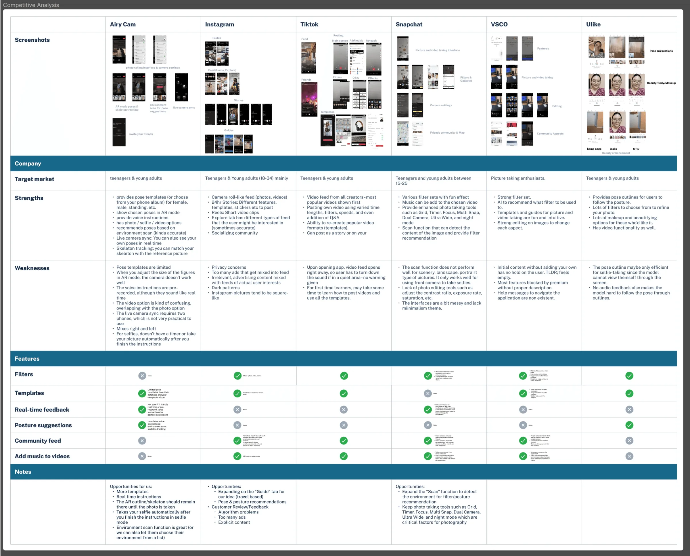
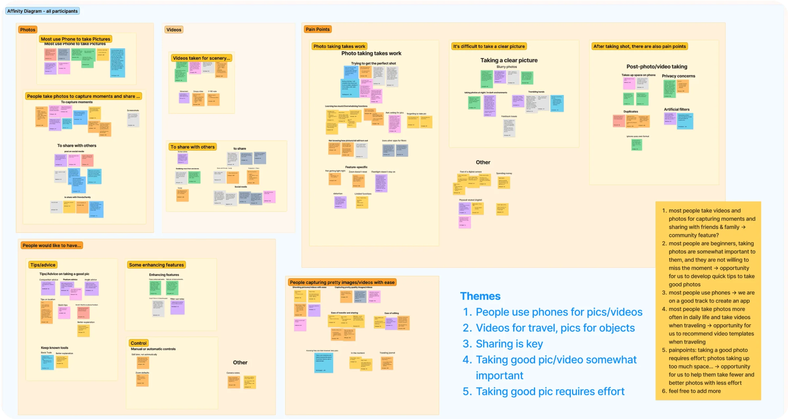
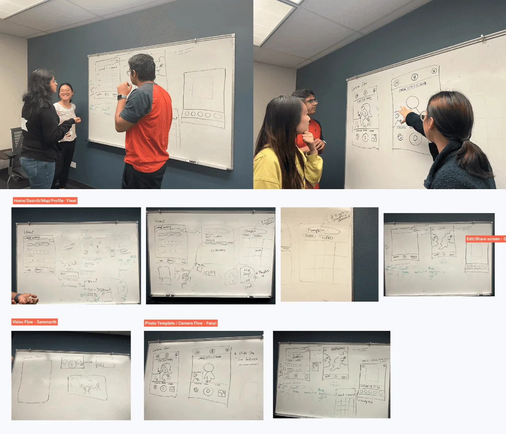
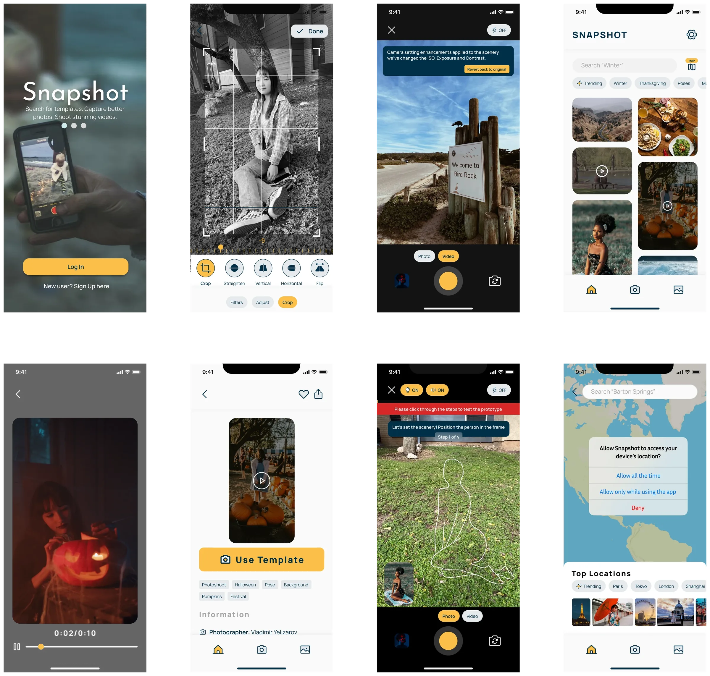
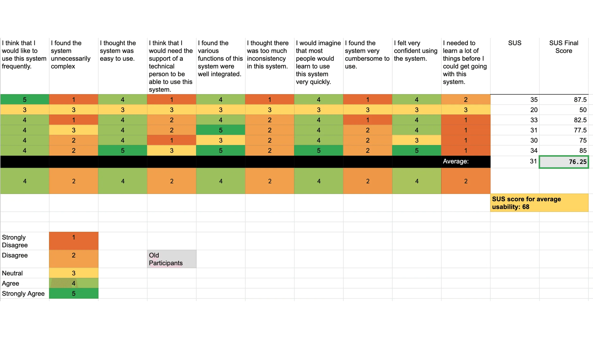
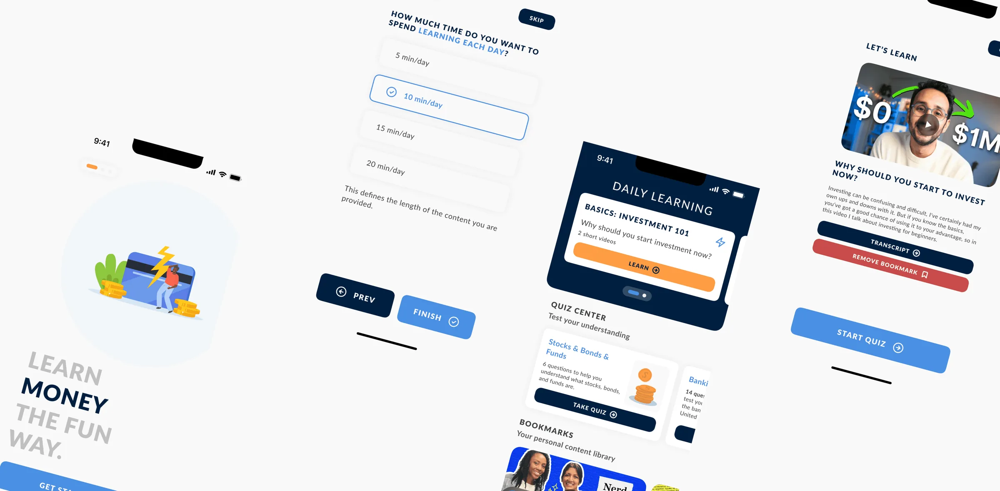

← Case Studies(10 / 14)

Snapshot
Real-time feedback while you shoot, not after
UX DesignResearchShadowingDesign Systems
Not everyone like's to read to much nowadays (thanks TikTok). See a comic strip?
Timeline2023
RoleProduct Designer
ToolsFigma · After Effects · Illustrator
Interviews10
Survey Responses 76.25 to 82.27 Jump in SUS80+

The Problem
There are hundreds of photo apps, and almost none of them help you take a better photo. Every suggestion arrives afterwards, in edit mode; which is exactly the wrong moment. The critical time is while you're holding the camera up.
Our starting concept came from a shared interest in music, photography, and film: recreate famous photos and movie scenes based on where you're standing. That grew into something wider: templates, pose guidance, and real-time feedback.
Research
10 Interviews
With people across a range of photography skill, friends and family included. What devices, when they shoot, what frustrates them. People overwhelmingly use phones, shoot most when travelling or somewhere new, and want something nice enough to share — but not everyone's a professional and the effort is real.
Qualtrics Survey
80+ responses, asking what apps they use, what their goals are, which features they'd want, and to rank those features. We selected nine essential features from it.
Ideas (everything, good or bad), Product Goals (merged into real-world actions), Users (scenarios)
80+ responses, asking what apps they use, what their goals are, which features they'd want, and to rank those features. We selected nine essential features from it.
Competitive Analysis
Across Instagram, Snapchat, TikTok, VSCO, AiryCam, and Ulike confirmed the gap: nobody was doing real-time guidance during capture.


01 / 02
The decision
WE CUT THE COMMUNITY FEED
For a photo app this is close to heresy; social is the obvious growth engine, and every competitor we studied leaned on it. We chose content creation over social networking and deliberately left the feed out. The product does one thing: help you take a better picture. Adding a feed would have made it a worse version of six apps that already exist.
WE KEPT TEMPLATES CONTRARY TO SURVEY RESULTS
Only 38% ranked photo/video templates as high priority, under our own bar. We kept the feature anyway, because it was the differentiator and because a survey measures what people can imagine, not what they'd use once it existed. The concept tests backed that up: pose recommendations and spot suggestions were what people responded to most.
Process
Crazy 8s
Eight sketches each in eight minutes, then presenting to find common themes. Camera flow, search, and map integration surfaced immediately.
Then wireframes, then concept testing with hand-drawn sketches deliberately kept rough so people understood it was a work in progress and felt free to criticise it.

Medium Fidelity
Moderated usability testing over Zoom and Figma, thinking aloud. SUS: 76.25. Above the 68 average, not good enough. We fixed four things: specific search instructions like "Search Barton Springs", a progress indicator, clearer real-time feedback, and a browsing function in maps.

What was shipped
High Fidelity Designs
Building upon our mid-fidelity screens, we elevated the design to a high-fidelity level. We developed a design system, incorporating a color palette and iconography for a cohesive visual identity. High-fidelity screens aimed to enhance the app's visual appeal while maintaining user-friendliness.
Unmoderated Usability Testing
With high-fidelity screens in place, we conducted unmoderated usability testing using UserTesting.com. This phase involved 10 participants who completed specific tasks within the app. The feedback gathered helped fine-tune the app, addressing issues like instruction clarity and user understanding of features. Achieving an SUS score of 82.27 indicated improved usability


01 / 02
The result
Interviews10
Survey Responses 76.25 to 82.27 Jump in SUS80+
Feedback was strong enough that some participants asked when they could actually use it. Error, action, and success colours were praised for clarity, and people specifically liked that the step messaging felt human. Icons around editing and saving still confused people.
NOTE FROM FUTURE SAMARTH
We tested with 10 and got a good SUS score, and I'd treat that with more suspicion now. A camera app lives or dies in real conditions; bad light, moving subjects, one hand full. Every test we ran was someone calmly holding a phone in a quiet room.
Next case studies
View all

(12)
MoneyLingo
The board game that became a quiz
UX DesignResearchDesign ThinkingsDesign Systems
Open